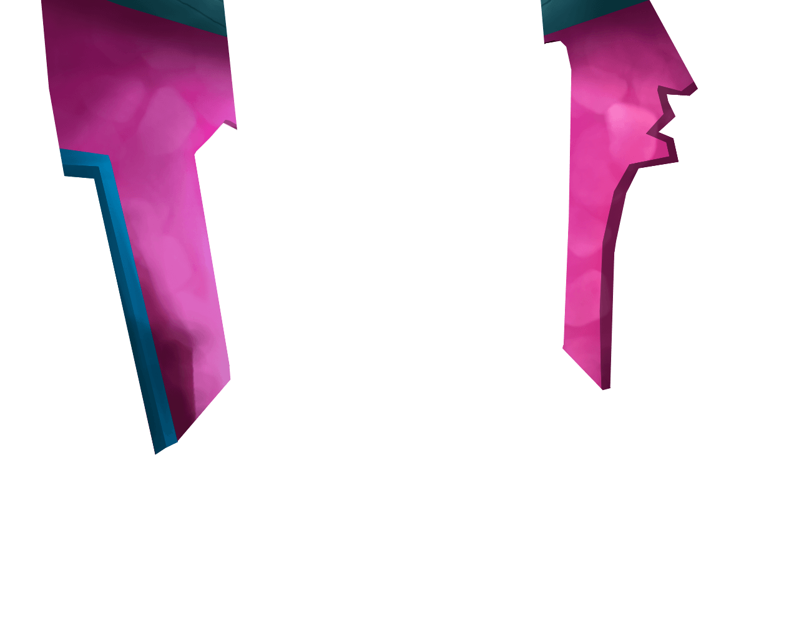

	    <div class="view-wrapper">
		    <div class="view">
			    
			    
			    
			    

			    <div style="width: 390px; height: 230px; margin-left: 900px; margin-top: 100px"
				    class="action" data-tooltip-header="EISEN" data-tooltip-style="width: 450px; height: 310px; margin-left: 50px; margin-top: 80px"
					data-tooltip-text="Sie meinten, es sei lediglich eine alte Kiste ihres Großvaters entwendet worden? Warum wurden dann diese wertvollen Figuren zurückgelassen? Eine Diebesbande würde sich so etwas nie und nimmer durch die Finger gehen lassen. Ich erwarte eine Erklärung!"></div>
		    </div>
	    </div>
	    <div class="view-wrapper">
		    <div class="view">
			    
			    
			    
			    
			    
			    

			    <div style="width: 950px; height: 230px; margin-left: 0px; margin-top: 0px"
				    class="action" data-tooltip-header="EISEN" data-tooltip-style="width: 450px; height: 245px; margin-left: 50px; margin-top: 380px"
					data-tooltip-text="Diese alten, schrumpeligen, vergilbten Fensterscheiben hatten schonmal bessere Tage... Mich dünkt, als wollten Sie hier nur die Summe ihrer Glasversicherung einheimsen! "></div>
			    <div style="width: 350px; height: 400px; margin-left: 450px; margin-top: 280px"
				    class="action sound optional" data-file="./Sounds/Figurensound/Schnauz_omnom.wav.MP3"></div>
		    </div>
	    </div>
	    <div class="view-wrapper">
		    <div class="view">
			    
			    
			    
			    
			    
			    
			    
			    
			    
			    
			    
			    
				
			    <div style="width: 390px; height: 400px; margin-left: 440px; margin-top: 250px"
				    class="action sound" data-file="./Sounds/Figurensound/Eisen.MP3" data-tooltip-header="EISEN" data-tooltip-style="width: 450px; height: 260px; margin-left: 50px; margin-top: 80px"
					data-tooltip-text="Fußabdrücke dreier Personen, unberührte Wertgegenstände und zwei mutmaßliche Täter, die unter dem Tisch hindurchspaziert sein sollen? <br/\>Noch so eine irreführende Verständigung der Detektoren und ich zeige Ihnen was eine Rechte ist… Äh, ich meinte, was Ihre Rechte sind, bevor wir Sie hinter Schloss und Riegel sperren. <br/\> SCHNAUZ, Abfahrt!"></div>
			    <div style="width: 210px; height: 230px; margin-left: 960px; margin-top: 540px"
				    class="action optional sound" data-file="./Sounds/Figurensound/Schnauz.wav.MP3"></div>
		    </div>
	    </div>
	    <div class="view-wrapper">
		    <div class="view actionless video">
			    <video width="1280" height="760" src="./Videos/Szene12_Detektoren_Nacht.mp4">
			    </video> 
		    </div>
	    </div>
	    <div class="view-wrapper">
		    <div class="view text audio" data-text="Nanu! Da scheint etwas aus der Garage zu fließen. Ich sollte einen Blick riskieren." data-pause-audio="detektivmusik" data-play-audio="hintergrundmusik">
			    
			    
			    
			    
			    
			    
				
			    <div style="width: 300px; height: 300px; margin-left: 950px; margin-top: 400px"
				    class="action"></div>
		    </div>
	    </div>
	    <div class="view-wrapper">
		    <div class="view actionless text" data-text="Würg! Wer hat hier denn gewütet? Da wird doch das Huhn in der Garage verrückt!">
			    
			    


			    <div style="width: 500px; height: 240px; margin-left: 520px; margin-top: 750px"
				    class="action sound" data-file="./Szene14/Chicken.wav"></div>
		    </div>
	    </div>
	    <div class="view-wrapper">
		    <div class="view actionless text" data-text="Das verschleimte Bett ruft, also setze ich besser bei Tagesanbruch meine Eigenrecherche fort.">
			    
			    
			    
			    
			    
			    
		    </div>
	    </div>
	    <div class="view-wrapper">
		    <div class="view audio text" data-pause-audio="hintergrundmusik" data-play-audio="testmusik" data-text="Mann, hab‘ ich schlecht geschlafen... Am besten befrage ich die Hausbewohner zu den Vorfällen.">
			    
			    
			    
			    
			    
			    
			    
			    
			    
			    
			    
			    
			    
			    
			    
			    


			    <div id="s17pupsiShow" style="width: 160px; height: 530px; margin-left: 780px; margin-top: 0px"
				    class="action sound" data-show="#s17pupsi1,#s17pupsi2,#s17pupsi3,#s17pupsiHide" data-hide="#s17pupsiTuer,#s17pupsiShow" data-file="./Sounds/Figurensound/FistiFipsi.MP3"
                    data-tooltip-header="FISTI & FIPSI" data-tooltip-style="width: 500px; height: 178px; margin-left: 200px; margin-top: 80px"
					data-tooltip-text="Tut uns leid, wir haben nichts mitbekommen, da wir heute erst wieder aus dem Urlaub zurückgekommen sind. Es gibt doch nichts Schöneres, als ein einwöchiger Wanderurlaub von Puschelberg nach Lunzenhausen, nicht wahr!?"></div>
			    <div id="s17pupsiHide" style="width: 300px; height: 580px; margin-left: 610px; margin-top: 0px; display: none;"
				    class="action optional sound" data-show="#s17pupsiTuer,#s17pupsiShow" data-hide="#s17pupsi1,#s17pupsi2,#s17pupsi3,#s17pupsiHide" data-file="./Sounds/Szene17/Close.wav"></div>

			    <div id="s17neaplerShow" style="width: 220px; height: 380px; margin-left: 290px; margin-top: 180px"
				    class="action sound" data-show="#s17neapler,#s17neaplerHide" data-hide="#s17neaplerTuer,#s17neaplerShow" data-file="./Sounds/Figurensound/NeaplerHochstapler.wav.MP3"
                    data-tooltip-header="NEAPLER HOCHSTAPLER" data-tooltip-style="width: 500px; height: 178px; margin-left: 200px; margin-top: 480px"
					data-tooltip-text="Ti hi hi... Oh ja, mein junger Herr... Ich habe etwas gehört und gesehen! Es waren mehrere Explosionen zu hören und eine Bisonherde war auch im Spiel... Daraufhin sah ich ein grelles Licht vom Himmel fallen und mehrere fliegende Affen verkündeten den Tag des leckersten Gerichts. Danach musste ich die Weitblickröhre aber ausschalten, um meinen Meditationsstunden nachgehen zu können... Ich muss mich entschuldigen, junger Herr, da ich jetzt meine Hühner zubereiten muss, die ich gestern nach einem erbitterten Kampf zur Strecke gebracht habe."></div>
			    <div id="s17neaplerHide" style="width: 300px; height: 440px; margin-left: 300px; margin-top: 170px; display: none;"
				    class="action optional sound" data-show="#s17neaplerTuer,#s17neaplerShow" data-hide="#s17neapler,#s17neaplerHide" data-file="./Sounds/Szene17/Close.wav"></div>

			    <div id="s17widowShow" style="width: 300px; height: 800px; margin-left: 0px; margin-top: 200px"
				    class="action sound" data-show="#s17widow,#s17widowHide" data-hide="#s17widowTuer,#s17widowShow" data-file="./Sounds/Figurensound/WIDOW.wav.MP3"
                    data-tooltip-header="WIDOW" data-tooltip-style="width: 500px; height: 178px; margin-left: 440px; margin-top: 680px"
					data-tooltip-text="Hallöchen Kleiner! <br/\>Meine Ohren sind leider nicht mehr die Jüngsten, weswegen ich nichts von einem Einbruch mitbekommen habe und auch mein RUFUS nicht. Stimmt´s RUFUS? Ich würde dir ja gerne ein Tässchen Kuchen und einen heißen Teller Tee anbieten, jedoch muss ich jetzt in die Stadt, um meine Medikamente abzuholen. Bis bald! <br/\>
<br/\>
...ach, und bevor ich es vergesse, bestell‘ doch bitte meiner Schwester liebe Grüße von mir. Ich habe sie bestimmt schon seit 22,5 Stunden nicht mehr gesehen."></div>
			    <div id="s17widowHide" style="width: 500px; height: 450px; margin-left: 0px; margin-top: 550px; display: none;"
				    class="action optional sound" data-show="#s17widowTuer,#s17widowShow" data-hide="#s17widow,#s17widowHide" data-file="./Sounds/Szene17/Close.wav"></div>

			    <div id="s17clayShow" style="width: 330px; height: 680px; margin-left: 950px; margin-top: 110px"
				    class="action sound" data-show="#s17clay,#s17clayHide" data-hide="#s17clayTuer,#s17clayShow" data-file="./Sounds/Figurensound/EL PARADISO.MP3"
                    data-tooltip-header="EL PARADISO" data-tooltip-style="width: 500px; height: 178px; margin-left: 440px; margin-top: 280px"
					data-tooltip-text="Hallodreo! <br/\>Ich habe tatsächlich vor zwei Tagen etwas gehört. Es war so gegen 3 Uhr nachts, als ich ein klirrendes Geräusch vernahm. Außerdem habe ich kurz darauf ein klägliches Jammern gehört. Ich wollte der Sache zunächst nachgehen, aber musste zuerst meine Yoga-Übungen abschließen. Leider bin ich damit gerade eben erst fertig geworden – man muss ja irgendwie in Form bleiben. Trotzdem noch viel Erfolg bei deiner Spurensuche!"></div>
			    <div id="s17clayHide" style="width: 500px; height: 600px; margin-left: 750px; margin-top: 180px; display: none;"
				    class="action optional sound" data-show="#s17clayTuer,#s17clayShow" data-hide="#s17clay,#s17clayHide" data-file="./Sounds/Szene17/Close.wav"></div>
		    </div>
	    </div>
	    <div class="view-wrapper">
		    <div class="view text" data-text="Das war ja nicht gerade hilfreich… Vielleicht erfahre ich von den anderen Stadtbewohnern mehr.">
			    
                
                
                
			    
			    

			    <div style="width: 280px; height: 330px; margin-left: 480px; margin-top: 320px"
				    class="action sound" data-file="./Sounds/Figurensound/Olga.wav.MP3" data-tooltip-header="OLGA" data-tooltip-style="width: 450px; height: 260px; margin-left: 610px; margin-top: 80px"
					data-tooltip-text="Schaut, wie ich die Straße wische – von alter Fisch zu Rosenfrische. <br/\>
Ich musste meine besten Premium-Reinigungsmittel vereinen, um diesen Glibber von der Straße zu bekommen... Da fällt mir ein, eine ähnliche Substanz schon einmal beim alten Abenteurer EXPEDIOS gesehen zu haben... Hm."></div>
		    </div>
	    </div>
	    <div class="view-wrapper">
		    <div class="view">
			    
                
                
                
		        
			    

			    <div id="s19showFipsi2" style="width: 350px; height: 550px; margin-left: 430px; margin-top: 220px"
				    class="action sound" data-file="./Sounds/Figurensound/FistiFipsi.MP3" data-hide="#s19fipsi1,#s19showFipsi2" data-show="#s19fipsi2"
					data-tooltip-header="FISTI & FIPSI" data-tooltip-style="width: 470px; height: 260px; margin-left: 50px; margin-top: 80px"
                    data-tooltip-text="Du machst dich auch auf den Weg in die Stadt? Da werden wir jetzt auch hinflanieren. <br/\>Solltest du den mürrischen LOW in seiner Werkstatt antreffen, kann er dir vielleicht bei deiner Tätersuche weiterhelfen. <br/\>Zumindest ist es kein Geheimnis, dass der alte Stinkstiefel mit den Schatten kooperiert."></div>
		    </div>
	    </div>

